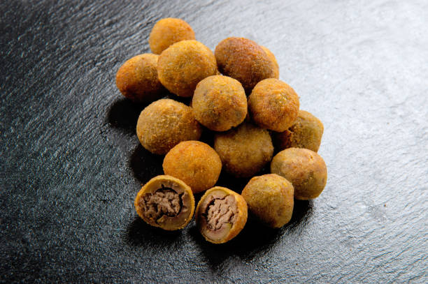

How to cook olive ascolane

Brief origin story of olive ascolane
Olive ascolane are an italian appetizer. They were first created in Ascoli
Piceno, a city in the region of Marche, from where they derive their name.
They were created by private chefs to use leftover meat after
celebrations.
Ingredients
- Pitted olives
- Beef
- Pork
- Chicken breast
- Carrots
- Celery
- Onions
- Parmesan cheese
- Eggs
- Olive Oil
- Salt
- Pepper
- 00 flour
- Breadcrumbs
Steps
- Cut into pieaces the beef, pork and chicken breat.
-
Pour some oil into a pot. Cut a carrot and some celery into pieces and
put them into the pot together with half an onion. Leave the vegetables
to cook for a few minutes.
-
Pour the beef and pork meat you previously cut into the pot and cook it
for about 20 minutes. After that put the chicken meat too. Leave it to
cook for about an hour with the lid on. After that turn off the heat and
leave it to cool off.
- Run all the meat through the meat grinder.
-
Put all the meat in a bowl a pour the cheese and an egg in and knead
with your hands.
-
Cut the olives open on just one side so you can roll them open and put
the meat you kneaded before and close them to give them the original
form back.
- Pour two eggs in another bowl and mix them with salt.
-
Pass the olives into the flour and into the egg mixture immediately
after. Pass the olives in the breadcrumbs to complete the breading.
-
Put all the olives in a tray, heat the olive oil up to 180°C and then
carefully pour the olives in and cook them for about 2 minutes. Pour
them in another bowl or tray with some kitchen paper to absorb the
excess oil and serve them.
Back to the Recipes Book